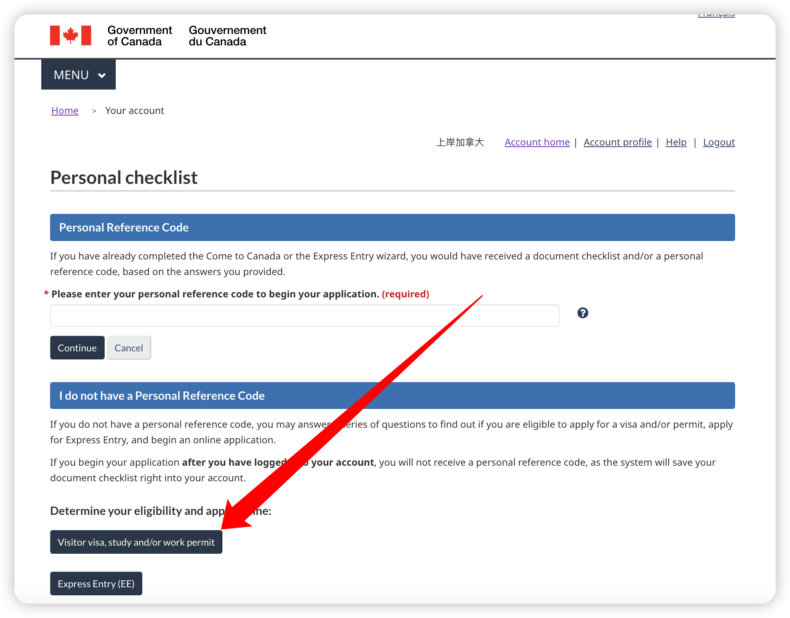
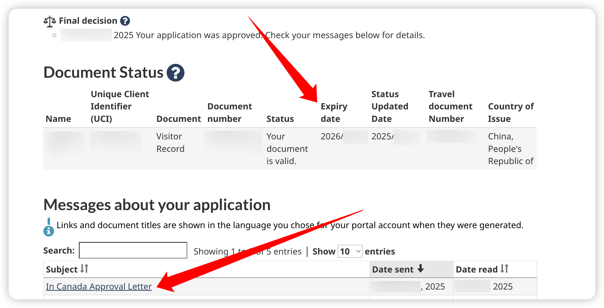
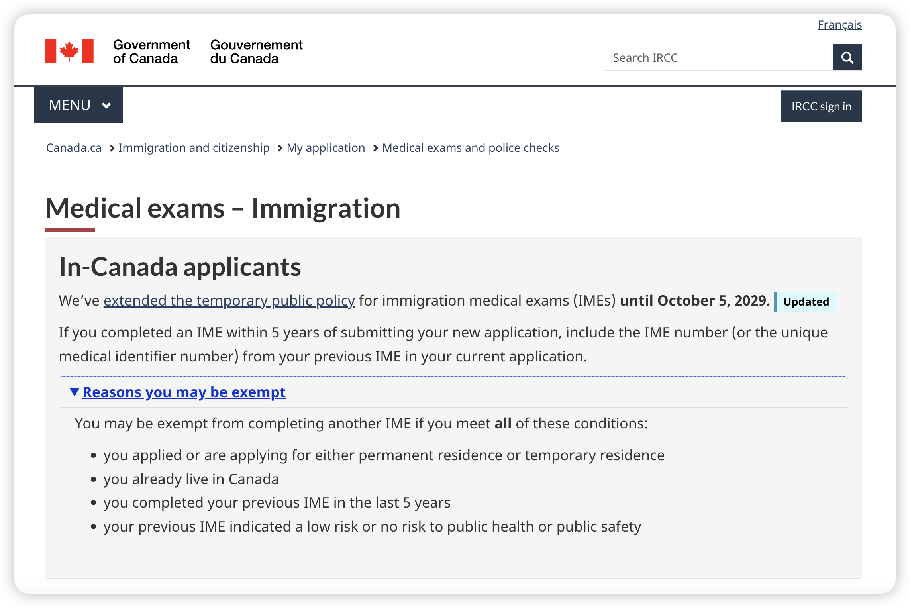

【手把手DIY教程】加拿大访客签证「大签」（Visitor Record）申请（首次申请）#
申请者自身情况的不同（如首次申请、续签、忘记及时申请需要补救等），加拿大访客签证「大签」（Visitor Record）的申请流程会略有不同。
请先阅读下文，了解相关背景知识和自己所属的类型。
「上岸加拿大」独家内容
【一文看懂】加拿大访客签证「大签」（Visitor Record）申请 https://www.shangan.ca/trv/visitor/visitor_record_all_in_one.html
本网页系 大签申请（首次申请） 的教程，其他类型的申请可点击卡片跳转到相应教程：
大签申请（首次申请）
申请Visitor Record：人在加拿大境内、有访客签证小签但需连续居留超过180天。
大签申请（续签）
申请Visitor Record：人在加拿大境内、已有访客签证大签/学签大签/工签大签，但计划在大签到期后继续居留。
大签忘申请了怎么办
无大签但已居留超180天（或有大签但已过期）且未提交大签申请，必须先申请恢复访客身份，再申请大签。
Step 1：登录IRCC账号#
打开加拿大移民局（IRCC）官网登录页面，点击GCKey username and password
依次输入GCKey的账号、密码、验证码和安全问题登录官网。
Step 2：填写在线问卷#
进入首页后，下拉页面至底端，找到Start an application 版块，点击 Apply to come to Canada ，然后点击 Visitor visa, study and/or work permit ，进入问卷回答页面。



根据自身情况填写问卷。填写完成后，会进入Review your answers的页面，可在这个页面复查：
确认内容无误后，点击页面右下角的Continue按钮。
Step 3：获得材料清单#
继续点击Continue按钮，进入Your Document Checklist页面：
这是IRCC的系统根据你的回答给出的材料清单，材料通常分3类：
① APPLICATION FORM(S)（申请表）
Visitor Record的申请表是IMM5708。可在该页面点击该表名字下载 PDF），下载后的文件名为：imm5708e.pdf
② SUPPORTING DOCUMENTS（支撑性材料）
根据你填写的问卷不同会有所变化。
③ OPTIONAL DOCUMENTS（选填材料）
包括 IMM5257 表格 和 Client Information，不一定非要填写。
Step 4：填写申请表#
填写IMM5708 表格。
Step 5：上传支持性材料#
所有申请者皆需提供的材料：
护照扫描件：包括信息页及所有盖章页（建议也上传旧护照，如有历史签证）。
资金证明：银行流水、存款、房产证明等，显示有足够资金在加生活，无需工作。
照片：420 x 540 px，可用线上证件照小程序拍摄制作。
部分申请人需要提供的材料：
IMM5476 授权表：若授权他人帮助申请，不管是付费的移民持牌顾问，还是家人朋友的免费代理，均需填写此表格后上传。
家属材料：如你在问卷中勾选了有家属在加拿大，需提供其工签、学签或PR卡等证明。
Step 6：上传可选材料#
虽然这一类材料是选填，可以不填。但除非你的申请条件特别过硬，或者有一些特殊原因，否则一般建议还是最好提供。
IMM5257 表格的内容不多，填写比较简单。
通常还建议附上一封解释信 ，上传至Client Information，系统的、完整的向签证官介绍自己的申请。
Step 7：提交、签名、付费#
待所有申请材料填写、上传完毕后，请再次检查一遍。确保无误后点击Continue按钮提交，然后点击签名，然后进入付费页面。支付成功后，会收到IRCC的站内信通知以及邮件通知。证明已提交成功。
只要你在签证到期前提交了申请，你就自动拥有了「默认续存状态」（maintained status）。哪怕申请结果没有出来，你也能合法的待在加拿大。
Step 8：等待结果#
IRCC官方提供了各类签证的平均处理时长，可通过官网链接进行查询。查询教程点这里。
官网
加拿大移民局IRCC「签证处理时长查询」网站 https://www.canada.ca/en/immigration-refugees-citizenship/services/application/check-processing-times.html
如果审批通过，申请者会先收到一封In Canada Approval Letter的通知。与此同时，在申请页面，在Document Status位置会新出现一条记录，上面会显示Expiry date，这就是你获批能在加拿大合法居留的最新截止日期。

通常1-2周后，你的住址邮箱会收到IRCC寄过来的纸质版「大签」Visitor Record，长下图这样。如果超过2周没收到，可以联系IRCC要求补寄。
至此，大功告成！
⚠️ 注意事项：体检豁免#
根据 IRCC 最新政策，如果你目前在加拿大境内，且过去5年内做过体检并为低风险或无风险者，可免于再次体检。该豁免政策至2029年10月5日前有效。
体检豁免政策

建议：即使材料清单里没有列出来体检这一项，最好也主动在Client Information中附上旧体检编号或报告截图，以免签证官漏看。否则有可能还是需要你去体检。虽然你可以根据上述条款再和IRCC沟通以争取豁免，或者为了省事再去体检一次。为避免这种费时费事的情况，建议提前在材料里说清楚。
重要
Visitor Record 仅延长你合法停留的时间，不等同于重新获得入境资格。离境后若签证（小签）已过期，仍需重新申请小签。
📌 总结#
步骤 |
说明 |
|---|---|
登录 IRCC 官网 |
填写问卷，生成Document Checklist |
准备材料 |
IMM5708表、护照、资金、照片等 |
上传并提交 |
使用GCKey提交所有文件 |
留意体检 |
满足豁免条件者也建议上传历史体检信息 |
等待结果 |
通常数周内出结果，可在账户查看状态 |
如需范文模板（解释信、资金证明样本等），请关注本站其他内容或联系专业顾问获取个性化支持。